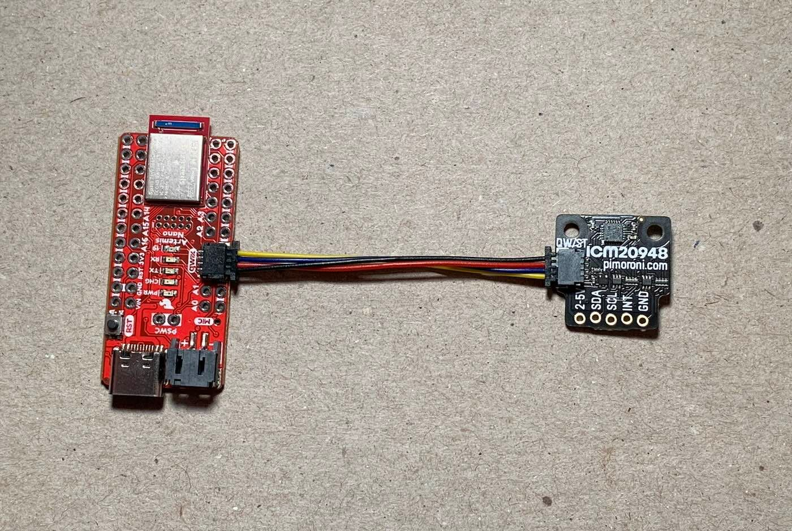
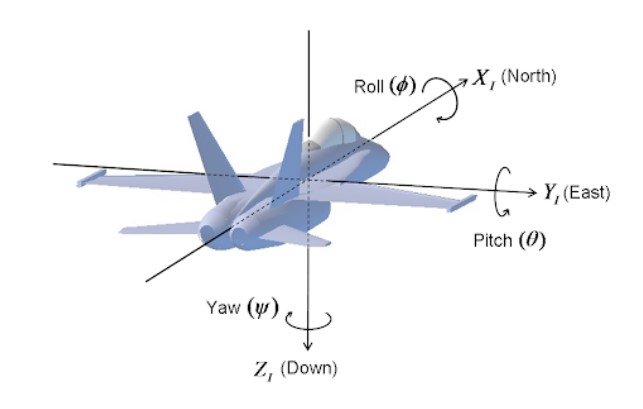
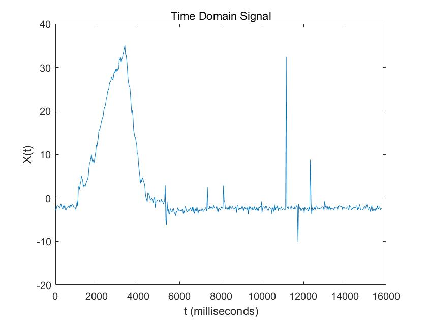
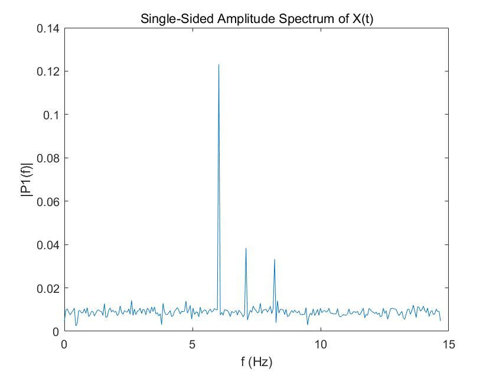
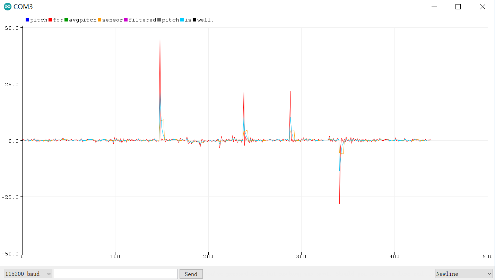
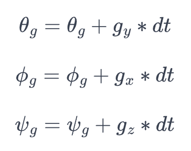

Introduction
The purpose of this lab is to get famaliar with the inertial measurement unit (IMU) sensors and test its functionalities and characters so that we can equip them on the robot.
Parts required
- 1 x SparkFun RedBoard Artemis Nano
- 1 x USB C-to-C cable
- 1 x 9DOF IMU sensor
- 1 x Force1 RC car
- 1 x Li-Ion 3.7V 850mAh battery
IMU sensor
Background
An Inertial Measurement Unit (IMU) is a sensor module that combines multiple sensors to measure and report specific aspects of an object's motion and orientation. Typically, an IMU includes accelerometers, gyroscopes, and magnetometers, each serving a distinct purpose. Accelerometers measure linear acceleration along multiple axes, providing information about changes in velocity and orientation. Gyroscopes measure angular velocity or rotational rate, indicating changes in orientation over time. Magnetometers detect changes in magnetic field strength, aiding in orientation determination relative to the Earth's magnetic field. By combining data from these sensors, an IMU can accurately track an object's movement in three-dimensional space, making it a crucial component in various applications such as navigation systems, robotics, virtual reality, and motion tracking.
Hardware connection
I used the Qwiic connector to connect the IMU breakout board to my Artemis through the I2C port and installed SparkFun's ICM 20948 Arduino library.
The SparkFun Example1_Basics code was executed to validate the normal operation of the IMU sensor. It's worth noting that in the example code, the AD0_VAL is predefined as 1 by default, setting the last bit of the I2C address to 1. However, in our setup, the ADR jumper remained open, necessitating an adjustment of the AD0_VAL to 0 to ensure proper recognition of the sensor. To visually confirm the IMU's functionality, we made slight modifications to the example code's serial output format to facilitate compatibility with the Better Serial Plotter. The resulting plots were demonstrated in the accompanying video. The upper plot illustrates the accelerometer readings along the XYZ axes, while the lower plot depicts the gyroscope readings. These visual representations offer valuable insights into the sensor's performance and behavior, aiding in the assessment of its functionality and accuracy.
When the IMU is slowly rotated on a plane perpendicular to the Z-axis, we observe noticeable fluctuations in the accelerometer readings along the X and Y axes. This phenomenon occurs because the accelerometer measures both gravitational acceleration and any linear acceleration along its axes. As the sensor rotates, the gravitational component sensed by the accelerometer changes, resulting in fluctuations in the readings. In contrast, the gyroscope readings remain relatively stable during slow rotations. Gyroscopes measure angular velocity, indicating the rate of change in orientation, and thus are less affected by changes in gravitational acceleration.
However, when the IMU is rapidly rotated, the accelerometer readings exhibit larger fluctuations. This is because rapid rotations induce significant angular changes, causing the sensor to experience greater linear acceleration along its axes due to the centrifugal force effect. Consequently, the accelerometer values reflect these rapid changes in orientation. Additionally, the gyroscope readings also show noticeable variations during rapid rotations. Gyroscopes measure the rate of change in orientation directly, and thus, they are sensitive to rapid angular velocity changes, resulting in fluctuations in their readings. Overall, by observing these fluctuations in both accelerometer and gyroscope readings, we can gain valuable insights into the dynamic motion and behavior of the IMU sensor under different rotational conditions.
Accelerometers
Roll, pitch and roll are the angles of rotation around the xyz axis respectively as shown in figure below.
We can calculate the pitch and roll based on the code snippet below:
pitch_acc = atan2(myICM.accX(),myICM.accZ()); pitch_acc = pitch_acc*180/M_PI; roll_acc = atan2(myICM.accY(),myICM.accZ()); roll_acc=roll_acc*180/M_PI;
Frequency Response
This is the behavior when I tapped the IMU sensor
I changed the data to the frequency domain:
There are some high frequency spikes in 5-10Hz. So I chose to use a 5Hz cut-off frequency. Therefore the RC = 1 / (2*pi*f) = 1 / (2*pi*5) =0.0318. Given that my sampling period is 30ms, alpha is T / (T+RC) =0.4854.
Upon observation, I noticed that the angle values exhibited jitter, likely stemming from uncorrelated noise in the sensor readings. To mitigate this issue, I implemented a simple averaging technique by taking the average of every five consecutive angle measurements and treating it as the new output. The results of this approach are illustrated in the graph: the raw pitch data is represented in red, while the orange line denotes the output after averaging. Additionally, I applied a complementary filter to the data, represented by the blue line, to further enhance the accuracy of the angle estimation. The complementary filter combines the low-frequency response of the accelerometer with the high-frequency response of the gyroscope to produce a more stable and accurate output. Overall, these modifications effectively reduced the jitter in the angle values, resulting in smoother and more reliable pitch data for use in subsequent analyses or control applications.
Gyroscopes
To calculate pitch, roll, and yaw from the gyroscope's degrees per second, I implemented the following equations on the Artemis to integrate over time.
prev_time = curr_time; curr_time = millis(); float gyr_x = myICM.gyrX(); roll_gyro += gyr_x * (curr_time - prev_time) / 1000.0; float gyr_y = myICM.gyrY(); pitch_gyro -= gyr_y * (curr_time - prev_time) / 1000.0; float gyr_z = myICM.gyrZ(); yaw_gyro -= gyr_z * (curr_time - prev_time) / 1000.0;
As with the accelerometer earlier, I tested the calculations by inducing pitches and rolls of 0, -90, and 90 degrees. Plotting the gyroscope measurements, I observed that:
- the gyroscope data is significantly less noisy
- the gyroscope data drifts over time
- when the sampling frequency decreases, the accuracy decreases. This is because when calculating the current tilt angles by integrating the angular velocities, we assume that the angular velosities don't change during the sampling period.
Given that the gyroscope drifts a lot, I would like to trust more on the accelerometer. I chose the alpha here to be 0.8.
integrating AG
const float alpha_AG = 0.8;
float pitch_comp = (pitch_gyro)*(1 - alpha_AG) + pitch_acc*alpha_AG;
float roll_comp = (pitch_gyro)*(1 - alpha_AG) + roll_acc*alpha_AG;
float yaw_g = yaw_g + yaw_gyro;
Here is the demo video.
Conclusion
Engaging in this lab was truly enlightening as it provided me with hands-on experience working with a real sensor and navigating through genuine constraints. Through this practical application, I gained valuable insights into the intricacies and challenges associated with sensor integration and data processing. I'm particularly enthusiastic about putting my IMU recording system to the test on the RC car once we attach the Artemis board. This transition to a real-world scenario promises to be both rewarding and insightful, as it will allow me to apply the knowledge and skills acquired in this lab to a tangible project. I anticipate encountering new challenges and opportunities for learning as we delve deeper into the implementation and optimization of our sensor-based system. This journey represents an exciting step forward in my exploration of robotics and sensor technologies, and I'm eager to see the results of our efforts manifest in the RC car's performance and functionality.